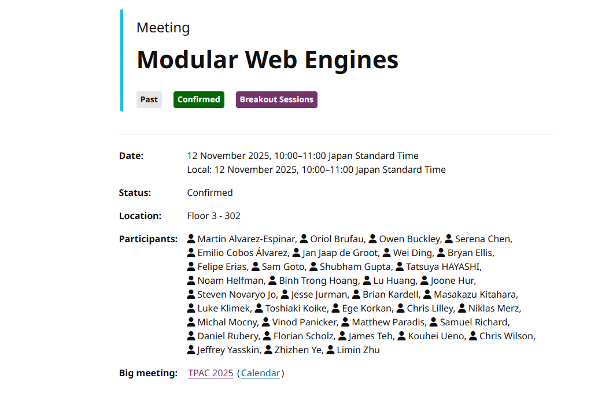

Light apps ecosystem

TPAC 2025
Kobe, Japan & online
13 November 2025


| Type | API | Description | #1 | #2 | #3 | #4 | 2+ | Standard |
|---|---|---|---|---|---|---|---|---|
| Data management | Data storage | Get, set key=value pairs | yes | yes | yes | yes | yes | Storage API (IndexedDB API), Web Storage API |
| File system management | Storage, management in the local file system | yes | yes | yes | yes | yes | File System API, File and Directory Entries API | |
| Data exchange with other MiniApps | Data exchange between installed apps | yes | yes | yes | yes | Broadcast Channel API, Channel Messaging API | ||
| Compression/Decompression | ZIP file management | yes | yes | yes | yes | |||
| Clipboard | Clipboard set/get | yes | yes | yes | yes | yes | Clipboard API | |
| Cryptography | Encryption, decryption, random | yes | yes | yes | yes | Web Crypto API | ||
| Cache | Cache management (rules, cleaning, etc.) | yes | Content Index API | |||||
| Sensors | Accelerometer | Sensors | yes | yes | yes | yes | yes | Sensor APIs (Accelerometer) |
| Compass | Sensors | yes | yes | yes | yes | yes | Sensor APIs (Magnetometer) | |
| Gyroscope | Sensors | yes | yes | yes | yes | yes | Sensor APIs (Gyroscope) | |
| Proximity sensor | Sensors | yes | Proximity Sensor | |||||
| Step counter | Sensors | yes | yes | yes | yes | |||
| Ambient light sensor | Sensors | Sensor APIs (Ambient Light) |
| Type | Feature | Style? | Funct.? | Rec? | Standard solution? |
|---|---|---|---|---|---|
| Container | Content division | <div> |
direct usage | ||
| Inline container | <span> |
direct usage | |||
| Dialog | <dialog> |
direct usage | |||
| Stacking container | yes | <div>* |
HTML + CSS (div { position: relative; }) |
||
| Slideshow (carousel) | yes | <div>* |
HTML + CSS Flexbox + overscroll-behavior + scroll-behavior... |
||
| Tabs | yes | <nav><section>* |
(OpenUI) (navs + section + CSS) |
||
| List container | yes | <ul><li> |
HTML + CSS | ||
| Fixed container | yes | <div>* |
HTML + CSS | ||
| Scrolling container | yes | <div>* |
HTML + CSS | ||
| Grid layout | yes | <div>* |
HTML + CSS | ||
| Marquee | yes | <marquee> (deprecated)* |
HTML + CSS | ||
| Drag and drop | yes | <div>* |
HTML + Drag and Drop API | ||
| Pull to refresh | yes | <div>* |
HTML + JS + CSS | ||
| Conditional block | @style |
CSS media queries | |||
| Navigation Bar | <nav> |
HTML + CSS |

This presentation:
http://espinr.github.io/talks/2025/1113-MiniApps-TPAC-ChineseIG
This is a template for slides for TPAC 2025.
Reader(s): To start the slide show, press ‘A’. Return to the index with ‘A’ or ‘Esc’. On a touch screen, use a 3-finger touch. Double click to open a specific slide. In slide mode, press ‘?’ (question mark) to get a list of available commands. To start the slide show, press Shift+F5 (Command+Enter on Mac). Return to the index by pressing ‘Esc’. You can also click to open a specific slide.
If it doesn't work: Slide mode requires a recent browser with JavaScript. If you are using the ‘NoScript’ add-on (Firefox or the Tor Browser), or changed the ‘site settings’ (Chrome, Vivaldi, Opera, Brave and some other browsers), or the ‘permissions for this site’ (Edge), you may have to explicitly allow JavaScript on these slides. Internet Explorer is not supported.